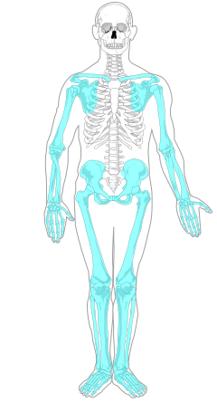

THE HUMAN SKELETON
The human skeleton is made up of a total of 206 bones, each and every one of them with a different morphology.
In an adult human being, the skeletal system makes up 15% of the body weight.
Bones are 98% composed of extracellular matter, mainly based on hydroxyapatite and collagen, only 2% of its tissues are cells, that is, osteoblasts, osteoclasts and osteocytes that are in charge of renewing the bone matrix.
Due to its percentage of eminently mineral matter, bone structures store 99% of the body's calcium.
FUNCTIONS
°Support: the skeleton functions as a rigid structure, which gives shape to the body.
°Movement: Joints, which are the joints between two bones, make movement possible. In addition, the muscles are attached to the bones.
°Protection: many of our internal organs are protected by the skeleton.
°Metabolic storage: bones store calcium and phosphate salts, and regulate their distribution.
°Blood cell production: inside some large bones is the red bone marrow, which is responsible for producing blood cells such as leukocytes and erythrocytes.
CLASSIFICATION OF BONES
Long bones: what predominates is length over other dimensions. They are usually found in the extremities, such as the femur, radius, tibia, and fibula.
Short bones: the dimensions are more or less equivalent, its shape being approximately cubical. The small bones that form the carpus in the wrist are of this type.
Flat bones: are thin bones, like those that form the vault of the skull.
Irregular bones: These are irregularly shaped bones, like vertebrae.
Sesamoid bones: They are named because their shape resembles a sesame seed. They are small and accessory bones that are usually found near the tendons, in the hands and feet.
PARTS OF THE HUMAN SKELETON
The set of bones of the skeleton is divided into two basic parts: the axial skeleton or central structure formed by the skull, the vertebral column, the ribs and the sternum and the appendicular skeleton, in which the bone structure of the waist and pelvis stands out together with the bones of the upper and lower extremities.
As seen previously...
Which of the two parts of the human skeleton do you want to emphasize?
THE HUMAN SKELETON
APPENDICLE SKELETON
AXIAL SKELETON